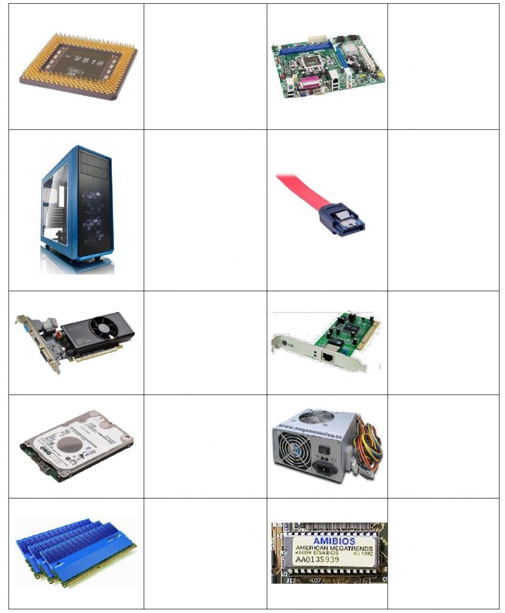

Historia de los Computadores
Definición de Computadores
Los computadores, también conocidos como ordenadores o computadoras, son dispositivos electrónicos capaces de procesar información y realizar cálculos de manera automatizada. Estos sistemas están compuestos por componentes físicos y programas de software que permiten realizar una amplia variedad de tareas, como el procesamiento de datos, la ejecución de programas y la conexión a redes.
Importancia de los Computadores
Los computadores han revolucionado casi todos los aspectos de nuestra vida moderna. Su importancia radica en su capacidad para procesar grandes volúmenes de información en tiempos muy reducidos, lo que ha impulsado avances en la ciencia, la industria, la educación y muchos otros campos. Los computadores han mejorado la eficiencia y precisión en tareas complejas, han facilitado la comunicación global a través de Internet y han abierto puertas a la innovación y el desarrollo tecnológico.
Historia de los Computadores
La historia de las computadoras es una travesía de avances tecnológicos que ha revolucionado nuestra forma de vivir, trabajar y comunicarnos. Desde los primeros dispositivos mecánicos hasta los modernos sistemas digitales, los computadores han evolucionado rápidamente a lo largo del tiempo.
- Precursores y Máquinas Mecánicas: Desde la antigüedad, existieron dispositivos y mecanismos que realizaban cálculos y procesamiento de información. Ejemplos notables incluyen el ábaco, utilizado en el antiguo Egipto y China, y la máquina analítica diseñada por Charles Babbage en el siglo XIX.
- Computadoras Analógicas: Durante el siglo XIX y principios del siglo XX, se desarrollaron computadoras analógicas para realizar cálculos científicos y matemáticos complejos. Estas máquinas utilizaban componentes mecánicos y eléctricos para representar y resolver ecuaciones.
- Computadoras Digitales y las Primeras Generaciones: En la década de 1940, se desarrollaron las primeras computadoras digitales, como el ENIAC (Electronic Numerical Integrator and Computer) y el UNIVAC I. Estas máquinas utilizaban válvulas y tarjetas perforadas para procesar información. Esta etapa incluye las primeras y segundas generaciones de computadoras.
- Computadoras de Transistores y Circuitos Integrados: A mediados de la década de 1950, se reemplazaron las válvulas por transistores, lo que permitió la creación de computadoras más pequeñas, rápidas y confiables. El uso de circuitos integrados en la década de 1960 permitió la miniaturización de los componentes y el aumento de la capacidad de procesamiento. Esta etapa incluye la tercera generación de computadoras.
- Computadoras Personales y la Era de la Información: En la década de 1970, se introdujeron las primeras computadoras personales, como el Altair 8800 y el Apple II, lo que permitió el acceso a la tecnología informática a nivel personal y empresarial. La cuarta generación de computadoras se caracterizó por el uso de microprocesadores y la popularización de las computadoras personales.
- Avances en la Tecnología de Computación y el Surgimiento de Internet: A lo largo de las décadas siguientes, se produjeron avances significativos en la tecnología de computación. Se desarrollaron redes de computadoras y se popularizó el uso de Internet. La World Wide Web (WWW) se convirtió en una herramienta revolucionaria para acceder y compartir información en línea.
- Avances Actuales y Futuros: En la actualidad, los avances en la tecnología de computación continúan a un ritmo acelerado. Se han desarrollado procesadores más rápidos y eficientes, se ha mejorado la capacidad de almacenamiento y se han explorado nuevos paradigmas, como la inteligencia artificial y la computación cuántica.
Componentes de un computador
Un computador está compuesto por varios componentes esenciales que trabajan en conjunto para realizar tareas de procesamiento, almacenamiento y comunicación de información. Estos componentes forman los bloques de construcción fundamentales de un computador. Aquí te presentamos una breve descripción de los principales componentes:
- Procesador (CPU): Es el cerebro del computador, encargado de ejecutar instrucciones y realizar cálculos. El procesador interpreta y procesa los datos, coordinando el funcionamiento de todos los componentes del sistema.
- Memoria RAM: Es la memoria de acceso aleatorio, donde se almacenan temporalmente los datos e instrucciones que el procesador necesita para realizar sus operaciones. La RAM proporciona una alta velocidad de lectura y escritura, permitiendo un acceso rápido a la información.
- Disco Duro o SSD: Es el dispositivo de almacenamiento principal del computador. Aquí se guardan los archivos, programas y sistemas operativos de manera permanente. Los discos duros tradicionales (HDD) utilizan discos magnéticos, mientras que los discos de estado sólido (SSD) emplean memoria flash, proporcionando una mayor velocidad de lectura y escritura.
- Placa Madre: Es el componente principal donde se conectan todos los demás. La placa madre alberga el procesador, la memoria, los puertos de conexión y otros componentes vitales. Actúa como el "esqueleto" del computador y permite la comunicación entre todos los elementos.
- Tarjeta Gráfica (GPU): Es responsable de procesar y mostrar gráficos en el monitor. Las tarjetas gráficas dedicadas son especialmente útiles para tareas que requieren un rendimiento gráfico avanzado, como juegos y diseño gráfico.
- Fuente de Alimentación: Suministra energía eléctrica a todos los componentes del computador. Es importante contar con una fuente de alimentación adecuada para garantizar un funcionamiento estable y seguro del sistema.
- Periféricos: Estos son dispositivos externos que se conectan al computador para interactuar con él, como el teclado, el mouse, la impresora, el escáner, los altavoces, entre otros. Estos periféricos permiten la entrada, salida y control de datos del computador.

Estos son solo algunos de los componentes principales de un computador, cada uno desempeñando un papel fundamental en su funcionamiento. La combinación y configuración de estos componentes determina el rendimiento y las capacidades del sistema.